Tutorial de instalacion servidor FTP
Marzo 25, 2023 posted por Juan E. Castro
Las siglas de FTP significan File Transfer Protocol, que se traduce como Protocolo de Transferencia de Archivos. Como su nombre indica, se trata de un protocolo que permite transferir archivos directamente de un dispositivo a otro.
Requisitos:
- Direccion Ip estatica
- Maquina virtual Windows Server 2012
- Maquina virtual con Window XP, 7, 8, 8.1
Paso 1: Instalacion de servidor IIS.
Se realiza la instalacion del servidor IIS a traves del Administrador del servidor en la opcion Agregar Roles y Caracteristicas.
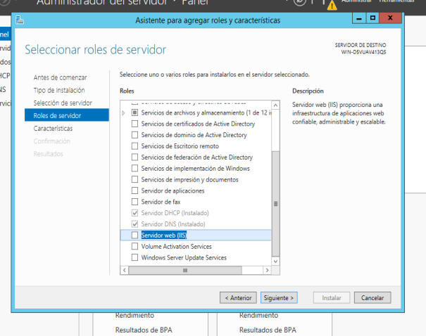Paso 2: Agregar servicio de FTP.
Durante la instalacion del servidor IIS se selecciona como servicios el servicio FTP.
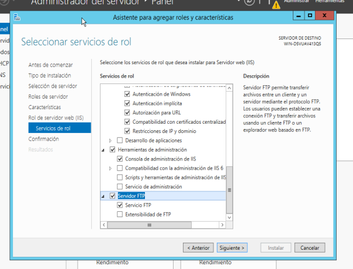Paso 3: Creacion de usuarios y grupos para el acceso al servidor FTP.
Para la creacion de usuarios y grupos es necesario dar click derecho en el logo de windows y seleccionar la opcion Administracion de Equipos y luego ir a la carpeta de Usuarios y Grupos Locales.
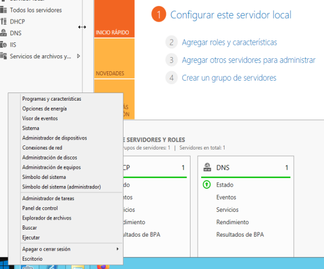 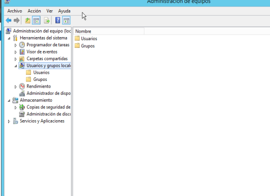Paso 4: Creacion de Usuarios.
Se crean los usuarios accediendo a la carpeta usuarios y dando click derecho en la zona blanca, crear usuario. En la creacion se quita la opcion que esta seleccionada en la parte inferior.
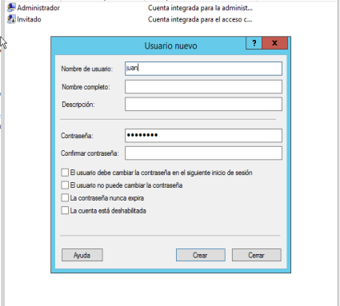Paso 5: Creacion de Grupo.
Se crea los grupos accediendo a la carpeta grupos y dando click derecho en la zona blanca, crear grupo. En la creacion del grupo se agregan los usuarios anteriormente creados.
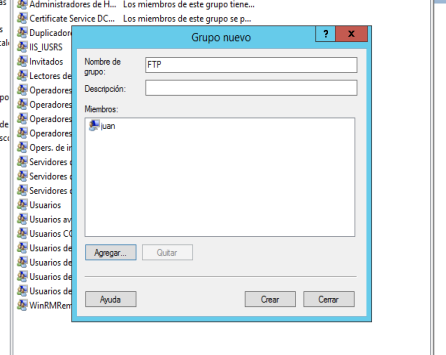Paso 6: Creacion de carpeta compartida.
Se crea una carpeta la cual sera la que se va a compartir por medio del servidor FTP. La carpeta se creo en la ubicacion que se ve en la imagen.
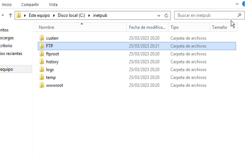Paso 7: Desactivar la herencia para la carpeta creada.
Para desactivar la herencia hay que ir a las propiedades de la carpeta, luego ir a la pestaña de seguridad y estando alli dar click en la opcion de opciones avanzadas. Por ultimo desactivar la herencia y dar click en la primera opcion.
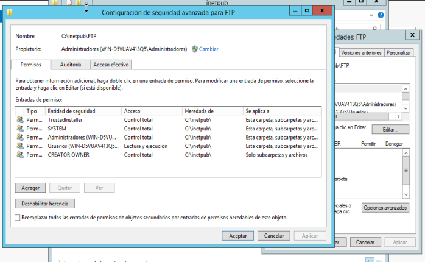Paso 8: Agregar grupo a los permisos de la carpeta.
Luego de desactivar la herencia, lo siguiente es agregar el grupo como grupo con permisos total sobre la carpeta creada.
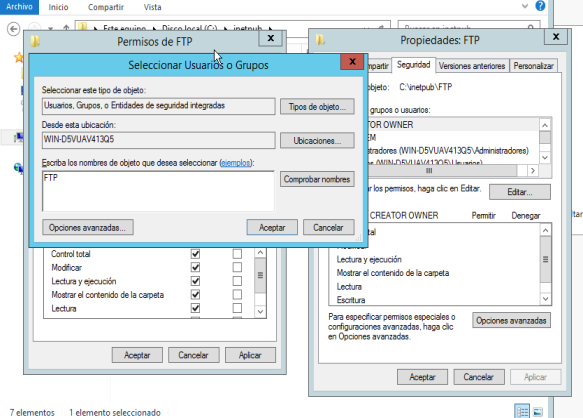Paso 9: Configuracion del servicio FTP en el servidor IIS.
Entramos en la configuracion del servidor IIS en la pestaña herramientas en el Administrador de Servidor.
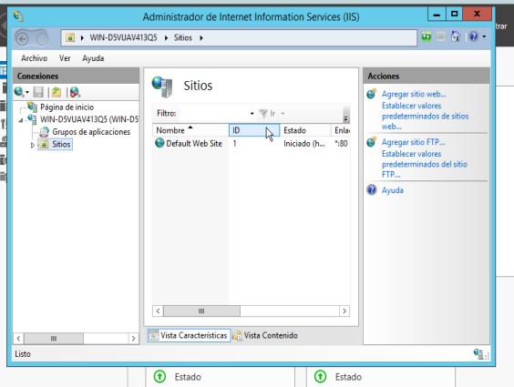Paso 10: Configuracion del servicio FTP en el servidor IIS.
Damos click derecho en la carpeta sitios y escogemos la opcion Agregar sitio FTP. Nos pedira un nombre el cual puede ser cualquiera y nos pedira la ruta de la carpeta que se creo pasos anteriores, seguido de esto nos pedira agregar la direccion Ip asociada al servicio FTP la cual es la direccion de la maquina virtual. Seleccionamos la opcion Sin SSL.
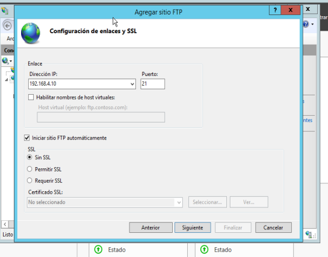Paso 11: Configuracion de permisos y autenticacion.
Continuando con la configuracion, escogemos la opcion de Autenticacion Basica, damos permiso a Roles o Grupos de usuarios especificos y por ultimo les damos permisos de Lectura y Escritura.
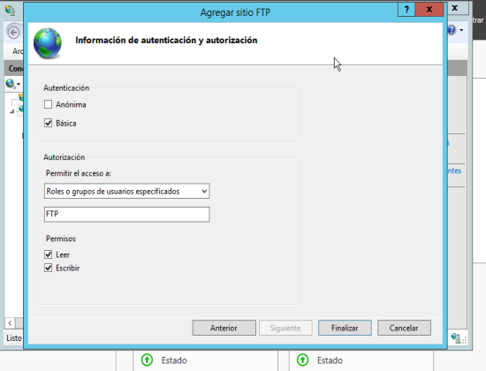Pruebas de funcionamiento del servidor FTP.
Verificando que nuestro servidor FTP este funcionando correctamente accedemos desde nuestra maquina cliente. Para el caso podemos acceder desde el explorador de archivos como se muestra en las siguientes imagenes. Si se realiza la conexion los pedira las credenciales corespondientes al usuario creado durante la configuracion total del servidor. Los archivos o carpetas que se creen en esa carpeta se podran visualizar en ambas maquinas, tanto del lado del servidor como del lado del cliente.
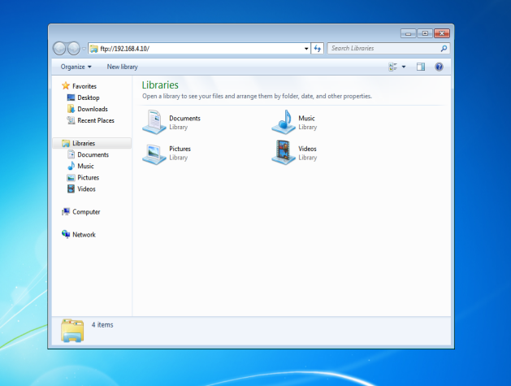 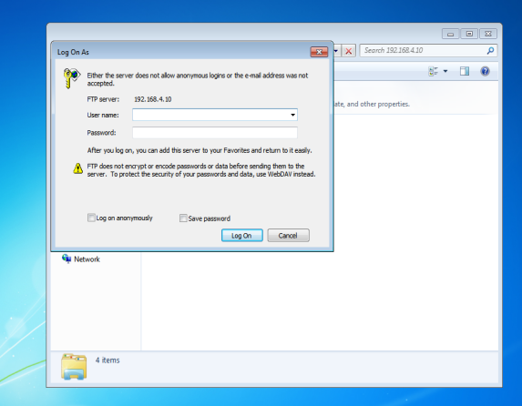